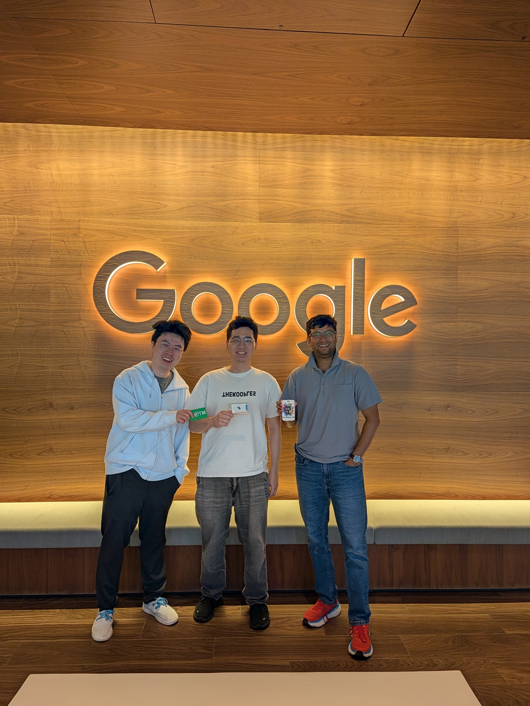

An Artichoke of Algorithm
Peeling back the layers of Computer Science.
Deep dives into algorithm engineering, distributed systems, probability, and Machine Learning fundamentals.
I stay in Seattle, WA, USA. I spent around 6 years in the beautiful Long Island, NY, USA. I grew up in the village Mourigram, Howrah, WB, India. Feel free to connect with me on social media.

This summer, I hosted a Ph.D. intern on the Google Cloud Bare Metal team in Seattle. Our project started with a simple question: when we maintain a large fleet of bare metal servers, where does the time actually go? Every minute a host spends in maintenance is a minute a customer can't use it, so answering that question well matters.
Read more →
In 2024, I defended my doctoral thesis, Going Beyond Worst-Case: A Study on Cache Adaptivity and Machine Learning Advice, at Stony Brook University. The thesis asks what happens when we stop designing algorithms for the most pessimistic input and start designing them for the systems they actually run on.
Read more →I write about algorithms, data structures, distributed systems, and the engineering behind modern computing infrastructure in my technical blog, An Artichoke of Algorithm.

Peeling back the layers of Computer Science.
Deep dives into algorithm engineering, distributed systems, probability, and Machine Learning fundamentals.
Read my former blog on Medium. In this blog, I share my thoughts and opinions on several social, technical, and political issues.